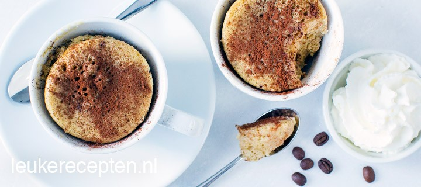

Koffie mug cake
Lekker op de zondagmorgen of als dessert: luchtige cakejes met koffiesmaak die binnen 10 min klaar zijn.
Ingrediënten
- 60 gram bloem
- 1 a 2 eetlepels instant/oplost koffiepoeder
- 3 eetlepels suiker
- 1 theelepel bakpoeder
- 35 ml melk
- 2 eieren
- 2 eetlepels olie
- slagroom en cacao om er bij te serveren
Bereidingswijze
- Meng de bloem, bakpoeder, suiker en oploskoffie door elkaar.
- Klop in een andere kom het ei, melk en de olie los.
- Schep het natte mengsel kort door het droge mengsel met een houten lepel.
- Verdeel het mengsel over 2 kopjes en zet ongeveer 2.30 min in de magnetron (900 watt). De tijd kan iets variëren per magnetron.
- Laat de koffie mug cakejes een minuutje uitdampen en bestrooi met cacao. Eet ze nog warm met een toef slagroom.
